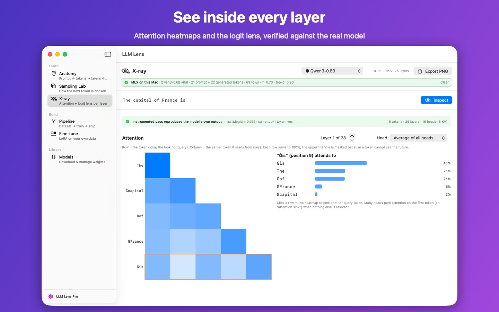
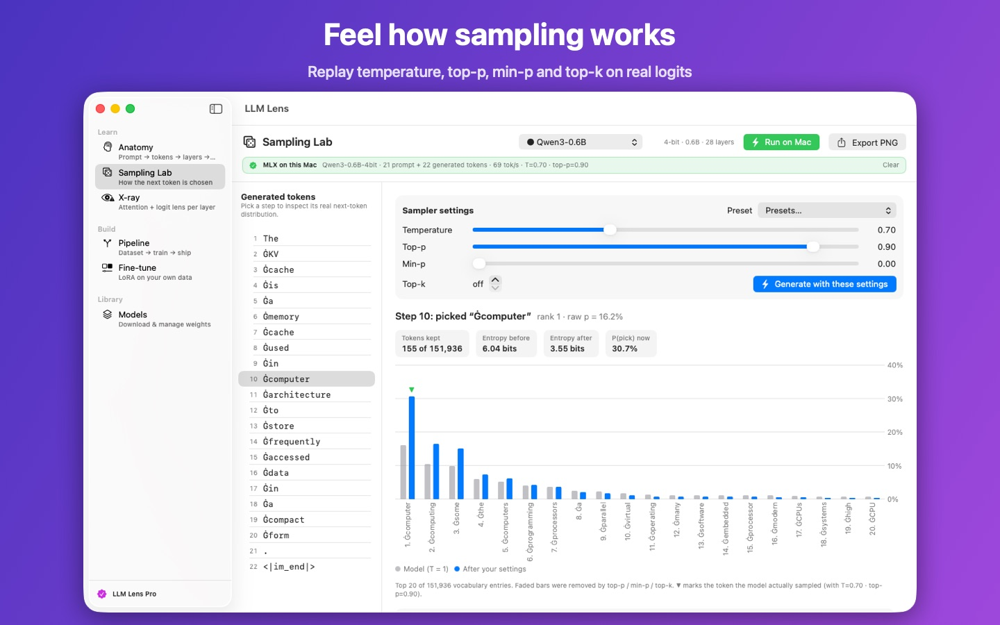
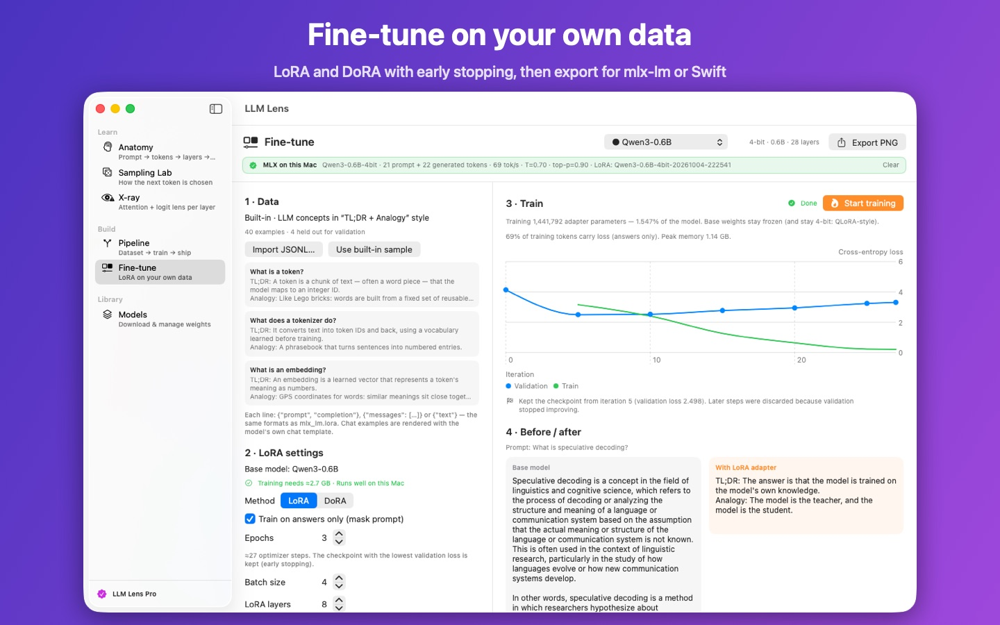

LLM Lens runs real open models locally and shows you every step — the tokens they read, where each layer looks, how the next token is chosen — then lets you fine-tune one on your own data.
Follow one prompt through chat template, tokenizer, embeddings, transformer blocks, logits and sampling — with real tokens, tensor shapes, memory and tokens per second.
Replay temperature, top-p, min-p and top-k on the real next-token distribution recorded for every generated token, using the same algorithm MLX samples with.
Attention heatmaps for every layer and head, a logit lens that shows the answer emerging layer by layer, and residual-stream charts — verified against the model's own output.
Train LoRA or DoRA adapters on your own JSONL with answer-only loss and best-checkpoint early stopping. Export adapters or a fused model for mlx-lm and Swift.
Qwen3, Qwen3.5, Gemma 3 & 4, Llama 3.2, SmolLM3 and LFM2. Each card explains its architecture and whether it fits your Mac's memory.
No account, no tracking, no cloud API. Prompts, data and adapters stay on your Mac; the network is used only to download the models you choose.



Requires a Mac with Apple silicon running macOS 14.0 or later. Models download separately from Hugging Face (from about 350 MB). LLM Lens Pro is available as a monthly or yearly subscription with a one-week free trial, or as a one-time lifetime purchase.